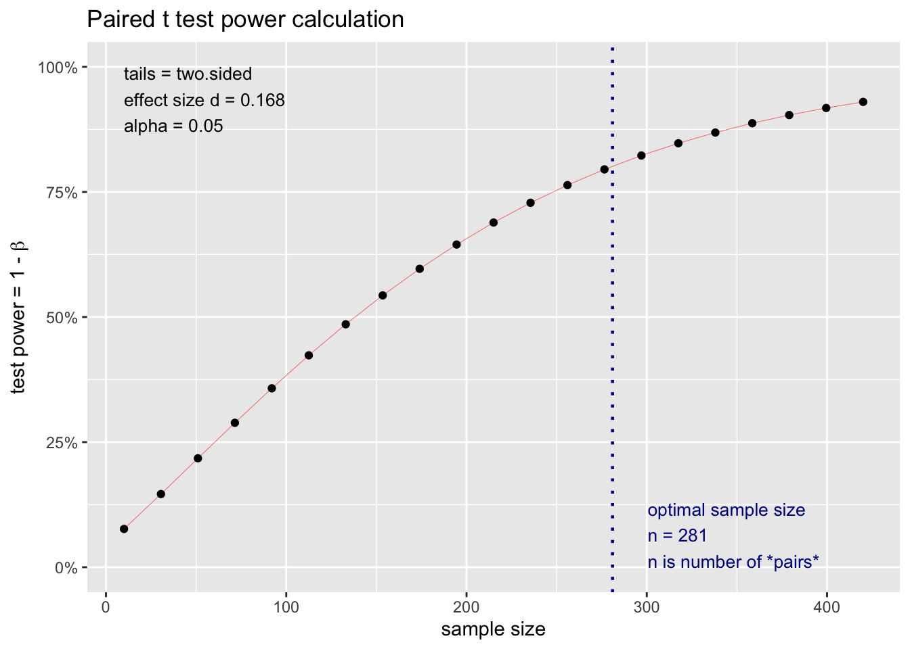
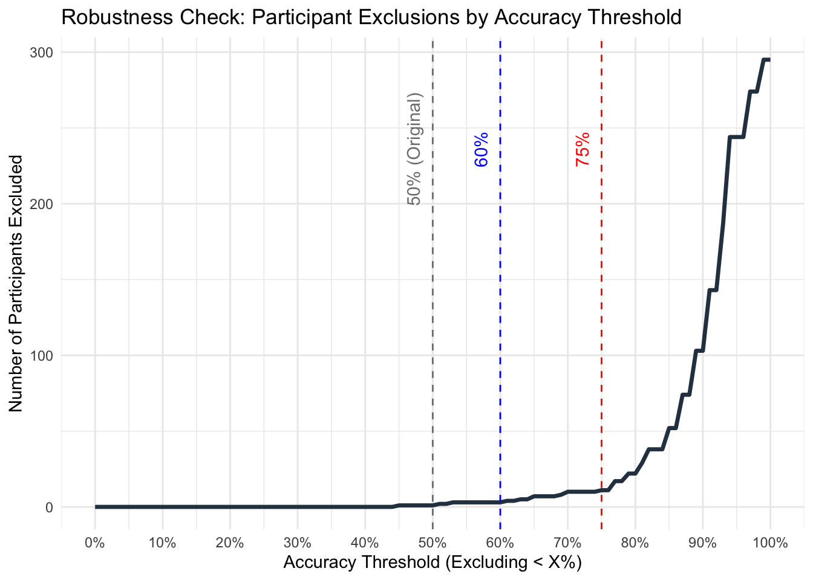
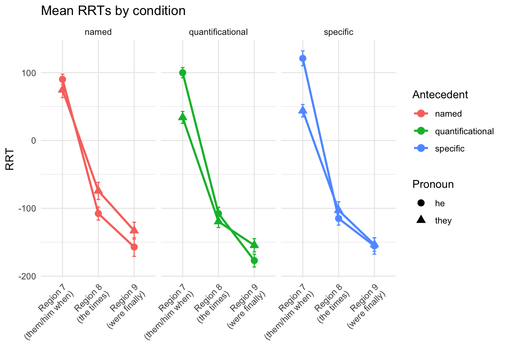

Replication of Processing bound-variable singular they by Chung-Hye Han & Keir Moulton (2022, Canadian Journal of Linguistics)
Author
Katherine Johnson (katiej23@stanford.edu)
Published
June 3, 2026
Introduction
This experiment replicated work from Han and Moulton (2022) on the processing of singular they. In previous work (e.g., Conrod 2019), bound-variable singular they (1) was found to be rated as more acceptable than referential singular they (2).
Bound they: Every child loves their mother.
Referential they: My friend’s child loves their mother.
Han and Moulton (2022) built on this work, exploring the relationship between bound vs. referential singular they and gender specificity of the antecedent as it relates to ease of processing a sentence. They found that bound-variable singular they with a gendered antecedent has a processing advantage over both referential singular they and bound-variable singular they without a gendered antecedent.
This experiment replicated the sentence processing experiment that Han and Moulton ran (their experiment 1b), aiming to (dis)confirm their observed interaction between bound-variable vs. referential singular they and gender specificity of the antecedent, as well as introducing an additional type of antecedent that Han and Moulton did not consider, shown below:
Referential and named they: Alex loves their mother.
Methods
Power Analysis
Han&Moulton report a t-value of 2.34 (p. 285) with 193 participants considered in their calculations. The Cohen’s d is estimated as \(d = \frac{t}{\sqrt{n}} = \frac{2.34}{\sqrt{193}} = 0.168\). From this, we can estimate power:
power_result <-pwr.t.test(d =0.168, # Effect size (Cohen's d)sig.level =0.05,power =0.80,type ="paired", # Every participant saw all the conditions (across different items)alternative ="two.sided")plot(power_result)

Planned Sample
The results of the power analysis suggest that at least 281 participants should be included in this replication. I propose collecting data from 300 people to be conservative and to allow exclusions of participants with low scores on comprehension questions.
Materials
The original experiment materials cross ‘two two-level factors, Antecedent (QUANT vs. REF) and Pronoun (THEY vs. HE), yielding four experimental conditions’ (Han&Moulton 2022, 283). This replication introduces a third level in the Antecedent factor (QUANT vs. REF vs. NAMED), yielding six total experimental conditions. ‘The test sentences in [this experiment] were made to be [long] so that the sentences do not end with the target region containing the critical pronoun. Also, the definite description in the embedded specificational clause began with the one who to ensure a singular interpretation of the post-copula pronoun.’ (Han&Moulton 2022, 283).
Only one competitor could win the race.
Every competitor thought that they one who would win the race would be them when the times were finally announced. QUANT.THEY
Every competitor that that the one who would win the race would be him when the times were finally announced. QUANT.HE
The youngest competitor that that the one who would win the race would be them when the times were finally announced. REF.THEY
The youngest competitor that that the one who would win the race would be him when the times were finally announced. REF.HE
Avery thought that the one who would win the race would be them when the times were finally announced. NAMED.THEY
Avery thought that the one who would win the race would be him when the times were finally announced. NAMED.HE
(Adapted from Han&Moulton 2022, (13))
Procedure
300 native English users participated in this study online via Prolific. Participants self-reported to be native users of English in their demographics on Prolific. Each participant received $3.20 as compensation upon completion of the experiment. Thirty item sets like (5) were distributed over six lists in a Latin-square design. `In addition, each list contained a set of [30] fillers. The sentences were presented on [Prolific] in a uniquely generated random order for each participant, using the moving-window paradigm (Just et al. 1982). After reading the context sentence, participants advanced to the next region by pressing on the space bar. No region could be displayed more than once. After each experimental sentence was read, a comprehension question was presented, which could be answered by pressing one key for ‘yes’ or another key for ‘no’. The comprehension questions tested participants’ understanding of the sentence, but not their interpretation of the critical pronoun. The comprehension question for the item in [(5)] is in [(6)]’. (Adapted from Han and Moulton 2022, 283-284)
Was there going to be a winner of a race? (Han&Moulton 2022, (14))
Analysis Plan
Participants with low comprehension question response score (<50%\footnote{This value was eventually changed to 75% in subsequent analysis; see justification below.}) and extremely fast reading speed per region (<50ms) were excluded. Additionally, reading times of a region that were 10 standard deviations above the mean were removed, in order to exclude extreme outliers from analysis. The regions of analysis are Region 7 (the target region), Region 8 (the spillover region), and Region 9. We calculated RRTs using character length from the entire dataset (including fillers) to estimate the reading time for each region for each participant (Ferreira and Clifton 1986, Trueswell and Tanenhaus 1994, Phillips 2006). We analyzed each region’s RRTs with a mixed model, with a random-effects structure: RRT ∼ Antecedent * Pronoun + (1+Antecedent * Pronoun|Participant) + (1+Antecedent*Pronoun|Item). (Adapted from Han&Moulton 2022, p. 284).
My addition to this experiment – exploring three different types of antecedent instead of two – does not require any changes to the analysis conducted in the original experiment.
Differences from Original Study
The sample size of the replication is larger than the original study (300 participants vs. 193 participants), following the justification outlined above. The setting is similar: the replication is conducted online via Prolific, while the original study recruited participants via Amazon Mechnical Turk and directed them to the experiment on Ibex Farm. The procedure is comparable, although different numbers of critical and filler trials were included because of the additional variation that my replication explores. The original experiment included 20 critical trials (5 per condition) and 40 filler trials; my replication includes 30 critical trials (5 per condition) and 30 filler trials (number of filler trials was decreased to save money by making the experiment slightly shorter). None of these changes are expected to affect results, although the additional critical conditions of course introduce additional data to be analyzed (with the analysis plan exactly matching the plan for the rest of the data).
Methods Addendum (Post Data Collection)
Actual Sample
# At this point, my data should look like H&M's raw data.# Now I want to figure out who to exclude for low question comprehension# 1. Calculate each participant's total accuracy just onceparticipant_accuracies <- rt_sub_clean %>%group_by(participant_id) %>%summarize(accuracy =mean(correct, na.rm =TRUE))# 2. Define the range of thresholds to test# This creates a list from 0 to 1 (0% to 100%) stepping by 1%thresholds_to_test <-seq(0, 1, by =0.01)# 3. Calculate how many people get excluded at EACH thresholdexclusion_curve <-tibble(threshold = thresholds_to_test) %>%mutate(# map_dbl runs the calculation for every single threshold in the listexcluded_count =map_dbl(threshold, ~sum(participant_accuracies$accuracy < .x)) )# 4. Plot the curve!ggplot(exclusion_curve, aes(x = threshold, y = excluded_count)) +geom_line(color ="#2C3E50", size =1.2) +# Add reference linesgeom_vline(xintercept =0.50, linetype ="dashed", color ="gray50") +annotate("text", x =0.50, y =max(exclusion_curve$excluded_count) *0.8, label ="50% (Original)", angle =90, vjust =-1, color ="gray50") +geom_vline(xintercept =0.60, linetype ="dashed", color ="blue") +annotate("text", x =0.60, y =max(exclusion_curve$excluded_count) *0.8, label ="60%", angle =90, vjust =-1, color ="blue") +geom_vline(xintercept =0.75, linetype ="dashed", color ="red") +annotate("text", x =0.75, y =max(exclusion_curve$excluded_count) *0.8, label ="75%", angle =90, vjust =-1, color ="red") +# Formattingscale_x_continuous(labels = scales::percent, breaks =seq(0, 1, by =0.1)) +theme_minimal() +labs(title ="Robustness Check: Participant Exclusions by Accuracy Threshold",x ="Accuracy Threshold (Excluding < X%)",y ="Number of Participants Excluded" )
Warning: Using `size` aesthetic for lines was deprecated in ggplot2 3.4.0.
ℹ Please use `linewidth` instead.

303 participants were recruited on Prolific. All participants were native English speakers, as reported in their Prolific demographics. The age of the participants ranges from 18-70, with the mean age at 37.51. Participants who did not meet threshold accuracy on comprehension questions were excluded. The accuracy threshold was read off of the above plot, with 75% accuracy chosen as a reasonable threshold. This exclusion resulted in the exclusion of 11 participants. Participants were also checked for an unreasonably fast reading speed per region (<50ms), although no participants met this exclusion criterion. Finally, reading times of a region that were 10 standard deviations above the mean were removed, in order to exclude extreme outliers from analysis. This resulted in excluding 0.1853002% of the observations from the data.
Differences from pre-data collection methods plan
Any differences from what was described as the original plan, or “none”. FLAG THE DIFFERENT MODELS.
Results
Data preparation
Data preparation following the analysis plan.
# Identify regions using string detection in 'stimulus'rt_model <- rt_clean %>%filter(condition %in%c("quantificational_they", "specific_they", "named_they", "quantificational_he", "specific_he", "named_he")) %>%group_by(participant_id, item) %>%mutate(# Find the word_index where the stimulus CONTAINS our target wordsis_pronoun_region =str_detect(stimulus, regex("them|him", ignore_case =TRUE)),# Grab the index number for that specific row# We use min() just in case the detection triggers twice in one trialpron_idx =if(any(is_pronoun_region)) min(word_index[is_pronoun_region]) elseNA_real_,# Define the three regions based on that indexregion_label =case_when( word_index == pron_idx ~"1_Critical", word_index == pron_idx +1~"2_Spillover_1", word_index == pron_idx +2~"3_Spillover_2",TRUE~NA_character_ ) ) %>%# Filter to keep only our three regionsfilter(!is.na(region_label)) %>%ungroup()# Add columns specifying Antecedent and Pronoun (i.e., separating these two from one another)rt_model <- rt_model %>%separate(col = condition, into =c("Antecedent", "Pronoun"), sep ="_", remove =FALSE# Optional, but highly recommended! )# 3. Check the results# print(paste("Rows found:", nrow(rt_model)))# table(rt_model$region_label, rt_model$condition)
# Gemini suggested that I should use "sum coding" instead of standard dummy coding because that's more likely to be what H&M used? I'm skeptical, but I'm trying it out# 1. First, ensure R knows these columns are categorical factorsrt_model$Pronoun <-as.factor(rt_model$Pronoun)rt_model$Antecedent <-as.factor(rt_model$Antecedent)# 2. Apply the Sum Coding# The number inside the parentheses is exactly how many levels that factor hascontrasts(rt_model$Pronoun) <-contr.sum(2)contrasts(rt_model$Antecedent) <-contr.sum(3)# 3. Optional: Verify that it worked!# This should print a little matrix with 1s and -1s instead of 0s and 1s.# contrasts(rt_model$Pronoun)
Type III Analysis of Variance Table with Satterthwaite's method
Sum Sq Mean Sq NumDF DenDF F value Pr(>F)
Antecedent 456656 228328 2 8460.3 1.8713 0.153991
Pronoun 6137977 6137977 1 8461.5 50.3041 1.423e-12 ***
Antecedent:Pronoun 1563881 781941 2 8462.2 6.4084 0.001656 **
---
Signif. codes: 0 '***' 0.001 '**' 0.01 '*' 0.05 '.' 0.1 ' ' 1
anova(model_spillover1, type="III")
Type III Analysis of Variance Table with Satterthwaite's method
Sum Sq Mean Sq NumDF DenDF F value Pr(>F)
Antecedent 515420 257710 2 8435.5 1.8191 0.16224
Pronoun 321945 321945 1 8435.7 2.2725 0.13173
Antecedent:Pronoun 791739 395869 2 8435.8 2.7943 0.06122 .
---
Signif. codes: 0 '***' 0.001 '**' 0.01 '*' 0.05 '.' 0.1 ' ' 1
anova(model_spillover2, type="III")
Type III Analysis of Variance Table with Satterthwaite's method
Sum Sq Mean Sq NumDF DenDF F value Pr(>F)
Antecedent 1014159 507079 2 8434.7 3.6257 0.02667 *
Pronoun 436238 436238 1 8434.7 3.1192 0.07741 .
Antecedent:Pronoun 118854 59427 2 8434.8 0.4249 0.65384
---
Signif. codes: 0 '***' 0.001 '**' 0.01 '*' 0.05 '.' 0.1 ' ' 1
# This is for the plottingrt_summary <- rt_model %>%group_by(Antecedent, Pronoun, region_label) %>%summarize(mean_rt =mean(rt, na.rm =TRUE),se =sd(rt, na.rm =TRUE) /sqrt(n()),mean_RRT =mean(RRT, na.rm =TRUE),se_RRT =sd(RRT, na.rm =TRUE) /sqrt(n()),.groups ="drop" )# Fix the labels for the x-axisrt_summary$region_label <-factor(rt_summary$region_label, levels =c("1_Critical", "2_Spillover_1", "3_Spillover_2"),labels =c("Critical", "Spillover 1", "Spillover 2"))
Here I want to replicate H&M’s table 3: RRT by condition for all regions. I want 6 rows: quant by pronoun, spec by pronoun, and named (my new data) by pronoun
# Transform the tibble into the desired table formatfinal_table <- rt_summary %>%# 1. Create two combined string columns: one for raw RT, one for RRTmutate(RT =sprintf("%.0f (%.0f)", mean_rt, se),RRT =sprintf("%.0f (%.0f)", mean_RRT, se_RRT) # Kept at 2 decimals for residuals ) %>%# 2. Select our grouping variables, the region label, and our TWO new combined columnsselect(Antecedent, Pronoun, region_label, RT, RRT) %>%# 3. Pivot the data to wide format# By providing a vector of column names to values_from, R will automatically# create 6 columns (e.g., RT_critical, RRT_critical, RT_spillover 1...)pivot_wider(names_from = region_label,values_from =c(RT, RRT) ) %>%# 4. Re-order the rows based on your custom theoretical hierarchymutate(Antecedent =factor(Antecedent, levels =c("quantificational", "specific", "named")),Pronoun =factor(Pronoun, levels =c("they", "he")) ) %>%arrange(Antecedent, Pronoun)# View the final resultprint(final_table)
# A tibble: 6 × 8
Antecedent Pronoun RT_Critical `RT_Spillover 1` `RT_Spillover 2` RRT_Critical
<fct> <fct> <chr> <chr> <chr> <chr>
1 quantifica… they 515 (10) 529 (9) 527 (9) 34 (9)
2 quantifica… he 507 (8) 538 (9) 515 (8) 100 (8)
3 specific they 525 (11) 545 (15) 536 (10) 44 (9)
4 specific he 529 (12) 536 (11) 530 (11) 121 (11)
5 named they 555 (14) 574 (14) 556 (14) 75 (11)
6 named he 498 (9) 531 (11) 535 (14) 90 (8)
# ℹ 2 more variables: `RRT_Spillover 1` <chr>, `RRT_Spillover 2` <chr>
# Can remove named data to create a plot more similar to H&M's originalrt_summary_wo_named <- rt_summary %>%filter(Antecedent %in%c("quantificational", "specific"))# The Plotggplot(rt_summary, aes(x = region_label, y = mean_RRT, color = Antecedent, shape = Pronoun, group =interaction(Antecedent, Pronoun))) +geom_line(linewidth =1) +geom_point(size =3) +geom_errorbar(aes(ymin = mean_RRT - se_RRT, ymax = mean_RRT + se_RRT), width =0.1) +scale_x_discrete(labels =c("Critical"="Region 7\n(them/him when)", "Spillover 1"="Region 8\n(the times)", "Spillover 2"="Region 9\n(were finally)")) +labs(title ="Mean RRTs by condition",x ="",y ="RRT") +theme_minimal() +theme(axis.text.x =element_text(angle =45, hjust =1)) +facet_wrap(~Antecedent)

Confirmatory analysis
The analyses as specified in the analysis plan.
Side-by-side graph with original graph is ideal here
Exploratory analyses
Any follow-up analyses desired (not required).
Discussion
Summary of Replication Attempt
Open the discussion section with a paragraph summarizing the primary result from the confirmatory analysis and the assessment of whether it replicated, partially replicated, or failed to replicate the original result.
Commentary
Add open-ended commentary (if any) reflecting (a) insights from follow-up exploratory analysis, (b) assessment of the meaning of the replication (or not) - e.g., for a failure to replicate, are the differences between original and present study ones that definitely, plausibly, or are unlikely to have been moderators of the result, and (c) discussion of any objections or challenges raised by the current and original authors about the replication attempt. None of these need to be long.